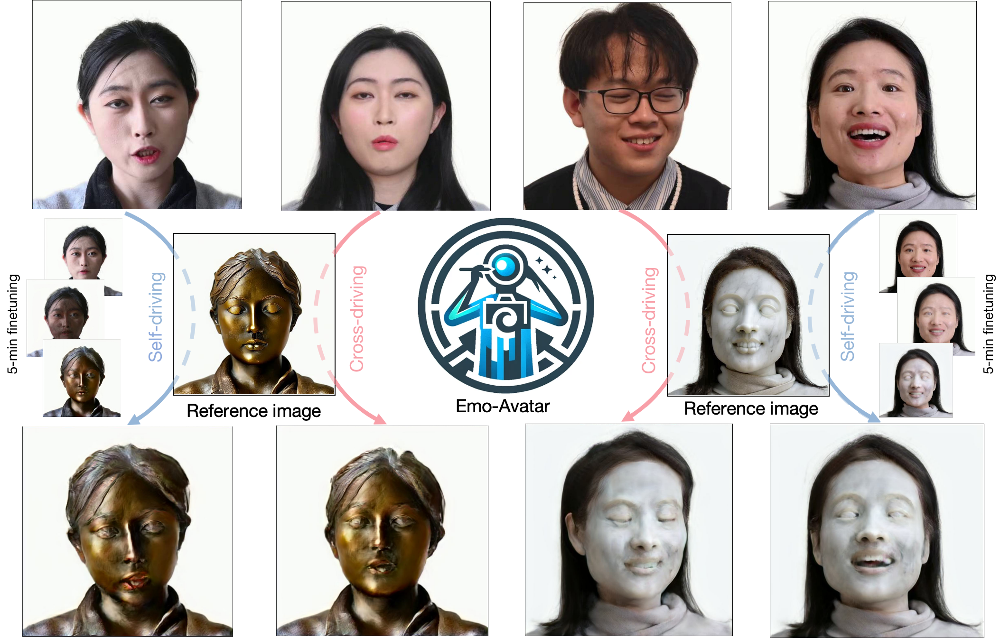

Emo-Avatar: Efficient Monotonic Video Style Avatar through Deferred Neural Rendering
Under Review
-
Pinxin Liu
University of Rochester -
Luchuan Song
University of Rochester -
Daoan Zhang
University of Rochester -
Hang Hua
University of Rochester -
Yunlong Tang
University of Rochester -
Huaijin Tu
Georgia Institute of Technology -
Jiebo Luo
University of Rochester -
Chenliang Xu
University of Rochester

Abstract
Artistic video portrait generation is a significant and sought-after task in the fields of computer graphics and vision. While various methods have been developed that integrate NeRFs or StyleGANs with instructional editing models for creating and editing drivable portraits, these approaches face several challenges. They often rely heavily on large datasets, require extensive customization processes, and frequently result in reduced image quality. To address the above problems, we propose the Efficient Monotonic Video Style Avatar (Emo-Avatar) through deferred neural rendering that enhances StyleGAN's capacity for producing dynamic, drivable portrait videos. We first delved into whether pre-trained StyleGAN can encode video portraits. It has been shown that StyleGAN can encode aligned, multi-view animatable portrait videos. However, for portrait videos containing upper body elements, StyleGAN struggles to accurately reconstruct these unaligned avatars. To fully leverage the facial information from the pre-trained StyleGAN for portrait rendering. We proposed a two-stage deferred neural rendering pipeline. In the first stage, we utilize few-shot PTI inversion to initialize the StyleGAN generator through several extreme poses sampled from the video to capture the consistent representation of aligned faces from the target portrait. In the second stage, we propose a Laplacian pyramid for high-frequency texture sampling from UV maps deformed by dynamic flow of expression for motion-aware texture prior integration to provide torso features to enhance StyleGAN's ability to generate complete and upper body for portrait video rendering. Emo-Avatar reduces style customization time from hours to merely 5 minutes compared with existing methods. In addition, Emo-Avatar requires only a single reference image for editing and employs region-aware contrastive learning with semantic invariant CLIP guidance, ensuring consistent high-resolution output and identity preservation. Through both quantitative and qualitative assessments, Emo-Avatar demonstrates superior performance over existing methods in terms of training efficiency, rendering quality and editability in self- and cross-reenactment.